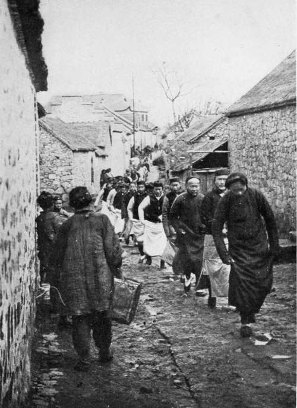

II. Weh Sao Tze The Militant. Continued
Description
This section is from the book "Foreign Magic: Tales of Every-Day China", by Jean Carter Cochran. Also available from Amazon: Foreign Magic: Tales of Every-Day China.
II. Weh Sao Tze The Militant. Continued
The day passed off with much festivity. The boys outdid themselves as shepherds and wise-men; the kids, which they carried in lieu of lambs, bleated plaintively the while, giving a touch of realism to the scene. That evening, weary of our part as hosts, we slipped off our best Chinese coats and our formal bows, and looked forward to a refreshing sleep. Alas, and alack, it was not to be, for our picturesque thatched roof caught fire from a defective stovepipe, and Christmas night was spent in watching our precious belongings ascend in the form of smoke.
The Boys From The L'uxg Ti Fu School Lift Their Skirts Daintily To Avoid The Mud Of The Roughly Paved Street As They March To Church.
Weh Sao Tze performed wonderful feats of valour in these exciting hours. She picked up treasures of silver and jewelry in fire-menaced rooms and carried them to their rightful owners, which was a harder strain on her than saving them. The report circulated that she had actually carried a bureau from one room to another; and, last but not least, she found the table boy looting the aforesaid bureau, duly reported him, and he was forthwith dismissed. For days afterwards her star was decidedly in the ascendant; the Chinese took pleasure in repeating all the slight symptoms of honesty ever observed in her family, and her praise was in everybody's mouth.
My sister-in-law said to me in triumph, "What if she is awkward? She moved my bureau."
And I was forced to reply, "Strength goes further than gracefulness when it comes to moving bureaus. I'm glad she has muscle, for I am afraid her manners will always lack the repose that marked the Revere, or was it the De Vere family?"
Sad to relate, however, toward spring Weh Sao Tze's star began to wane. Mr. Dooley wisely maintains that a "hero should be shot in the act." Rumours of petty thefts came from time to time, but it was her temper that brought matters to a climax. Her disposition and that of the new table boy were not compatible, and that is putting the case mildly. Weh Sao Tze realised her failing and really tried very hard to overcome it, but day by day the struggle grew more severe, and her angry voice could be heard over the entire compound and down the street. At length, after having given her about a dozen last chances, the crisis came and she was dismissed. She packed her things and withdrew stormily, but as she left, she turned to the master of the house and said in a queer, stifled tone,
"Doctor Scott, you will always look after my boys, will you not?"
A little puzzled by the sudden change of manner, the master promised and she departed.
Soon the table boy had his dismissal, too, but before he left all the silver had to be counted. According to Chinese custom, he had been put in charge of the dining-room, and if anything were lacking he was responsible and was required to replace the missing article. Knives, forks, and spoons were carefully gone over, and eight solid silver forks were not to be found. The boy asked permission to search the premises, which was granted, and with the cook and the gatekeeper as witnesses, he started his quest. First the compound was examined with no result; then the house, and in a stove stored in the attic, close to the door of Weh Sao Tze's room, the forks were found at last.
Their disappearance will always be a mystery. The boy may have taken them and put them there to throw suspicion on Weh Sao Tze, or she may have done it to get the boy into trouble, or have hidden them there in the hope that she herself might some day have a chance to smuggle them out of the house. Even those familiar with involved Chinese reasoning have had to give up this riddle. The news of the theft and the subsequent find spread like wildfire, and was soon known throughout the city.
That evening was the first peaceful time in weeks; only Solomon, who had some experience with women's tempers, or any soldier who has been within sound of the incessant firing of big guns, can appreciate what the surcease meant.
About nine o'clock, however, Weh Sao Tze's little boy appeared and asked the doctor to go immediately, as his mother was very ill. The doctor was appalled, for he guessed in a moment what it meant. She had taken opium "to save her face," and to throw the blame on ourselves or on the table boy.
It was a night of terrible suspense. The thought that any human being should come to such a pass through us made us heart-sick. Besides which it was famine year, and anti-foreign feeling was always smouldering, ready to leap forth and annihilate us at any moment. Through the long hours the doctor worked desperately. He found Weh Sao Tze had taken a large dose, though she denied it, and only towards morning did he see signs of hope. At breakfast time he returned utterly exhausted, leaving Weh Sao Tze sufficiently recovered to be treated by his assistant.
The most amazing thing to us was to find that for once Chinese opinion was with the foreigner. Usually when a person endeavours to commit suicide, the other person involved is blamed whether guilty or not, but this time all the street condemned Weh Sao Tze. The Christians among them shook their heads in horror and said:
"We have never heard of a Christian trying to kill herself before."
Now arose the question as to how to discipline Weh Sao Tze. The church could not overlook such unseemly conduct on the part of a member, yet the leaders feared that if she were punished, with the weight of public opinion against her, she might again seek to destroy herself. It was finally decided to suspend her from membership for a few months. At the next communion service a very chastened Weh Sao Tze attended; she could not, of course, take part in the Sacrament, but when the congregation bowed their heads for the Lord's Prayer, she whispered to her old mistress who knelt beside her,
"Mrs. Scott, may I repeat 'Our Father,' if I say it very, very softly?"
So one more penitent added her voice to the thousands who through the ages have sought forgiveness. Such was Weh Sao Tze; surely she was "ower bad for blessing, and ower gude for banning," like Rob Roy.
Continue to:
- prev: II. Weh Sao Tze The Militant
- Table of Contents
- next: III. Mr. Chang Of The Crystal Spring Village